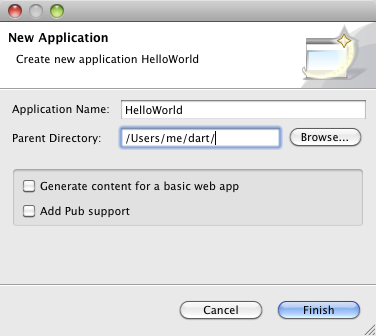
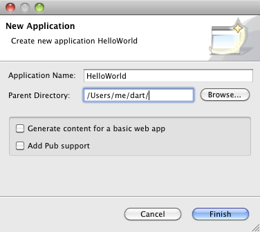

It’s easy to create a simple web or command-line app from scratch. This step walks you through creating and running a command-line app.
Click the New Application button
 (at the upper left of Dart Editor).
Alternatively, choose File > New
Application... from the Dart Editor menu. A dialog
appears (see Figure 1-3).
(at the upper left of Dart Editor).
Alternatively, choose File > New
Application... from the Dart Editor menu. A dialog
appears (see Figure 1-3).Figure 1-3. Create command-line or web apps with Dart Editor
Type in a name for your application—for example,
HelloWorld. If you don’t like the default directory,
type in a new location or browse to choose the location.
Unselect Generate content for a basic web app and Add Pub support if they’re selected. Then click Finish to create the initial files for the app.
A default Dart file appears in the Edit view, and its directory appears in the Files view. Your Dart Editor window should look something like Figure 1-4.
Figure 1-4. Dart Editor displaying a new app’s files